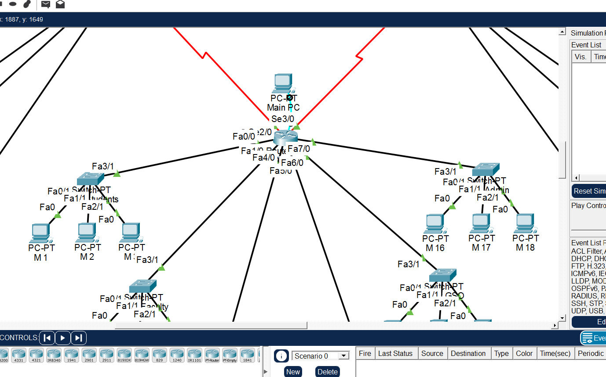
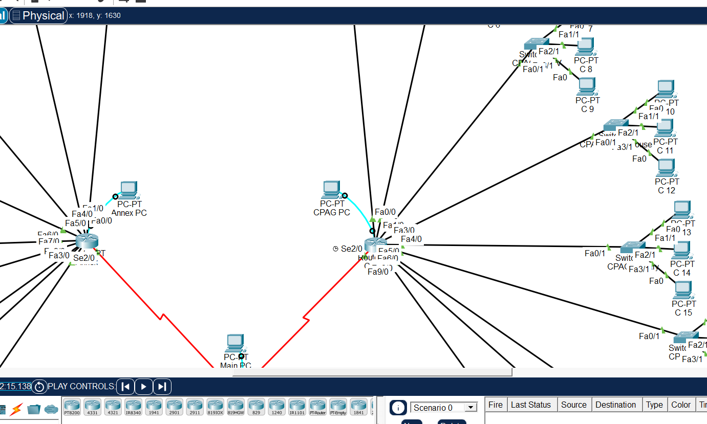

Networking
VLSM Simulation



OVERVIEW
The Enterprise VLSM Network Design is a high-level simulation created in Cisco Packet Tracer that focuses on efficient IP address management across a fragmented corporate structure. Unlike standard subnetting, this project utilizes VLSM to tailor subnet sizes to the specific host requirements of each department—Branch 1, Branch 2, and a central Headquarters—minimizing wasted IP addresses while ensuring full inter-network connectivity through structured routing.
KEY FEATURES
- Optimized IP Allocation (VLSM): Implemented a custom addressing scheme that accommodates varying host counts (from 25 users in Branch 2 to 100+ in HQ) without exhausting the available address space.
Three-Node Router Backbone: Established a stable wide-area network (WAN) using a triple-router configuration, simulating a distributed corporate office environment.
Segmented Departmental LANs: Each branch is further divided into specific functional subnets, providing a clean organizational structure for different business units.
WHAT I LEARNED
- The Efficiency of VLSM: This project was a major lesson in "IP Conservation." I learned how to calculate masks based on the specific needs of a department, ensuring that a small office with 10 users doesn't consume an entire /24 block meant for 254 users.
Strategic Network Planning: Beyond just "making it work," I learned the value of planning. Creating a detailed VLSM table before configuration saved hours of troubleshooting and ensured a clean, professional implementation from the start.
TOOLS USED
Cisco Packet Tracer